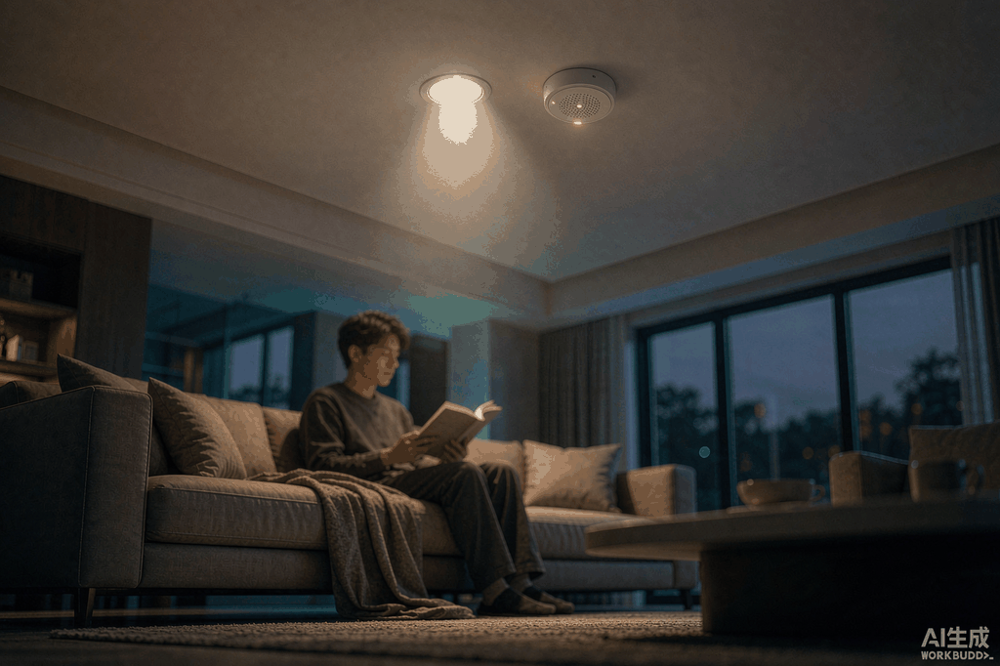
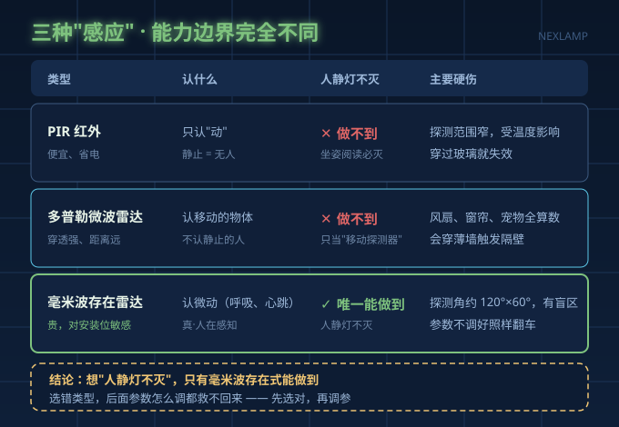
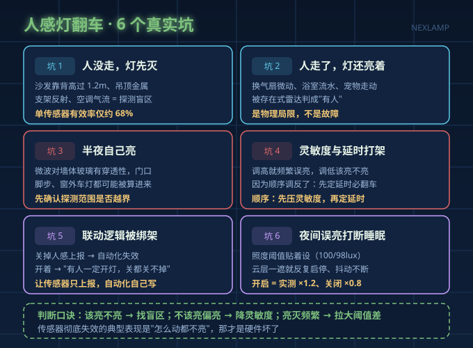
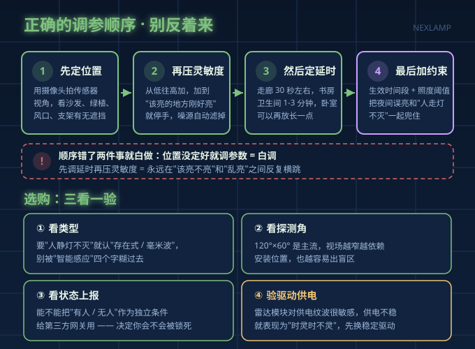

"人走过去就亮"，买的时候是卖点，装完变成了投诉点。
我们在装修论坛和电商评论区翻了一圈，人感/感应灯的高频抱怨就三类：走过去半天不亮、坐在沙发上不动灯自己灭了、半夜睡得正香灯忽然亮了。 看着像传感器坏了，其实绝大多数是类型选错、位置装错、参数调反了——三件事调对两件，体验就完全不一样。
先分清三种"感应"，能力边界差得远
| 类型 | 认什么 | 强项 | 硬伤 |
|---|---|---|---|
| PIR 红外 | 只认"动" | 便宜、省电 | 静止就判"无人"，坐姿阅读必灭 |
| 多普勒微波雷达 | 认移动的物体 | 穿透力强、距离远 | 认不出人，风扇/窗帘/宠物全算数 |
| 毫米波存在雷达 | 认微动（呼吸、心跳） | 人静灯不灭 | 贵、对安装位和参数敏感 |

关键结论：要"人静灯不灭"，只有毫米波存在式能做到，PIR 和普通微波雷达都做不到。想省这点钱，就要接受"坐着看书灯灭"。
选对了类型，才是下面 6 个坑。这也是为什么很多人类型选对了照样翻车——真正难的不是买，而是装和调。

6 个翻车坑，对号入座
坑1：人没走，灯先灭。 除了类型不对，最常见的元凶是探测盲区。毫米波雷达典型探测角约 120°水平 × 60°垂直，但沙发靠背高过 1.2 米、吊顶金属支架反射、空调出风口气流扰动，都会吃掉有效视场。工程实测：复杂家具布局下单个传感器有效率只有约 68%，补一个"沙发侧后方"副传感器、逻辑设成"任一触发即亮灯"，能提到 94%。
坑2：人走了，灯还亮着。 卫生间换气扇持续微动、浴室流水、宠物走动，都会被存在式雷达判成"有人"。这是雷达的物理局限，不是故障——用延时和生效时间段兜底，比硬调灵敏度靠谱。
坑3：误触发，半夜自己亮。 普通微波雷达对墙体、玻璃有一定穿透，门口走廊的脚步、窗外的车灯、楼下房间的动静都可能被算进来，还会穿过薄墙触发隔壁的灯。装之前先确认探测范围有没有覆盖到不该覆盖的空间。
坑4：灵敏度和延时来回打架。 这是最多人卡住的地方——调高灵敏度就频繁误亮，调低又该亮不亮。正确顺序是先降灵敏度、再定延时：先把灵敏度压到"刚好能在门口触发"，噪源自然过滤掉大半；再用延时防止瞬时误判马上关灯。反着调，怎么都调不好。
坑5：APP 里的联动逻辑把你绑架了。 有品牌的人感款被用户吐槽得很惨：关掉"人感上报"，自动化就彻底失效；开着，又变成"有人就一定开灯，关都关不了"。还有蓝牙款快按两下就丢指令。解法很朴素：别用灯自带的那套联动，让传感器只负责上报状态，自己在网关里写自动化。
坑6：夜间误亮打断睡眠。 加一条"生效时间段"，把自动感应限制在白天和傍晚；再叠一个照度条件——低于设定 lux 才启动。注意照度阈值不能贴着设，开启 100lux、关闭 98lux 这种差值会让云层一遮就反复启停，正确做法是开启阈值取实测值 ×1.2、关闭取 ×0.8，把差值拉开。
正确的调参顺序（别反着来）
按这个顺序走，一次能调好，不用反复试：
- 先定位置：用手机摄像头对着传感器视角拍一张，确认沙发、绿植、风口、金属支架有没有挡住视场；有遮挡先移位，参数调不回来。
- 再压灵敏度：从低往高加，加到"该亮的地方刚好亮"就停手。
- 然后定延时：走廊 30 秒左右，书房、卫生间 1～3 分钟，卧室可以更长。
- 最后加约束：生效时间段 + 照度阈值，把夜间误亮和第 2 类误触发一起兜住。

选购时"三看一验"
- 看类型：要人静灯不灭就认"存在式/毫米波"，别被"智能感应"四个字糊过去。
- 看探测角：120°×60° 是主流，视场越窄越依赖安装位置。
- 看是否上报状态：能不能把"有人/无人"作为独立条件给第三方网关用——这一条决定了你会不会被厂家的联动逻辑锁死。
- 验驱动供电：雷达模块对供电纹波很敏感，供电不稳会表现为"时灵时不灵"、频繁重启。用恒流、低纹波的驱动，比换更贵的传感器更治本。
顺带说一句：行业内很多人感灯"时灵时不灵"，拆开最后发现是驱动输出的纹波在干扰雷达模块。传感器只是眼睛，驱动才是那个稳住心跳的东西。
常见问题
Q：人感灯频频误亮，是不是传感器坏了？
A：先按"位置 → 灵敏度 → 延时 → 时间段"四步排查，八成能解决。传感器彻底失效的典型表现是"怎么动都不亮"，那才是硬件问题。
Q：卧室能不能装带人在的感应灯？
A：睡眠中翻身、呼吸都可能被存在式雷达识别为"有人"并触发开灯，所以卧室更建议只用作夜灯联动（低亮度、限定时间段），主灯还是手动或语音控制更稳。
Q：一个传感器能覆盖全屋吗？
A：不能。每个传感器大约只负责一两个空间，客厅这种家具复杂的区域建议主位 + 侧后方各一个，冗余部署。
总结
- 想要"人静灯不灭"，只有毫米波存在式雷达能做到，PIR 和普通微波雷达都不行。
- 装完翻车大多是盲区、灵敏度、延时、时间段这四件事，跟传感器质量关系不大。
- 调参顺序必须是"位置 → 灵敏度 → 延时 → 约束条件"，顺序错了白折腾。
- 别被厂家自带联动绑死，让传感器只上报状态、自动化自己写。
- 传感器时灵时不灵，先怀疑驱动供电纹波，再怀疑传感器。
耐利普科技专注 LED 驱动电源与智能照明方案，涂鸦 Zigbee / Matter 智能驱动全系支持人感雷达模块协同与状态上报，3C 认证，需要选型建议欢迎联系刘先生：13825496855。